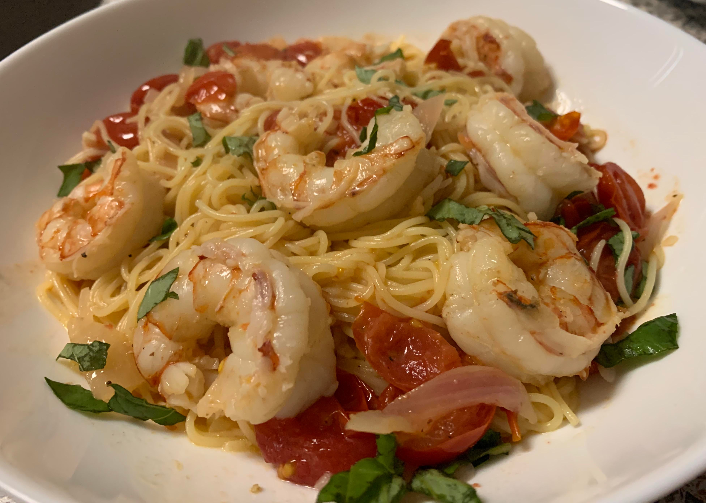

Shrimp Scampi Pasta

Description:
This is a delicious shrimp scampi pasta recipe that I found on Youtube one day after my husband requested this dish.
It is a simple recipe that is SO easy to make and incredibly delicious. It is within my personal ranking of Top ten dishes,
if not the best dish, I have ever made. Click the link below to check it out. Thank you Gordon Ramsay!
Youtube Video
Main Ingredients:
- shrimp
- angel hair pasta
- cherry tomatoes
- shallots
- garlic cloves
- lemon zest
- white wine
- chicken stock
- Seasonings: salt, pepper, red chili flakes, Parmasean cheese, fresh basil
Steps
1. First, heat up a pot of water to boil the pasta
2. Next, heat up a skillet and toss in shallots, garlic, tomatoes. Season with salt, pepper, chili flakes.
3. Deglaze with white wine and chicken stock
4. Add fresh basil
5. Cook the angel hair pasta for 90 seconds
6. Cook the shrimp for 90 seconds. Add lemon zest
7. Toss together all the ingredients and top with Parmesean cheese. Enjoy!